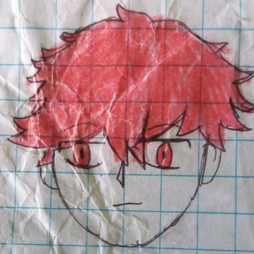
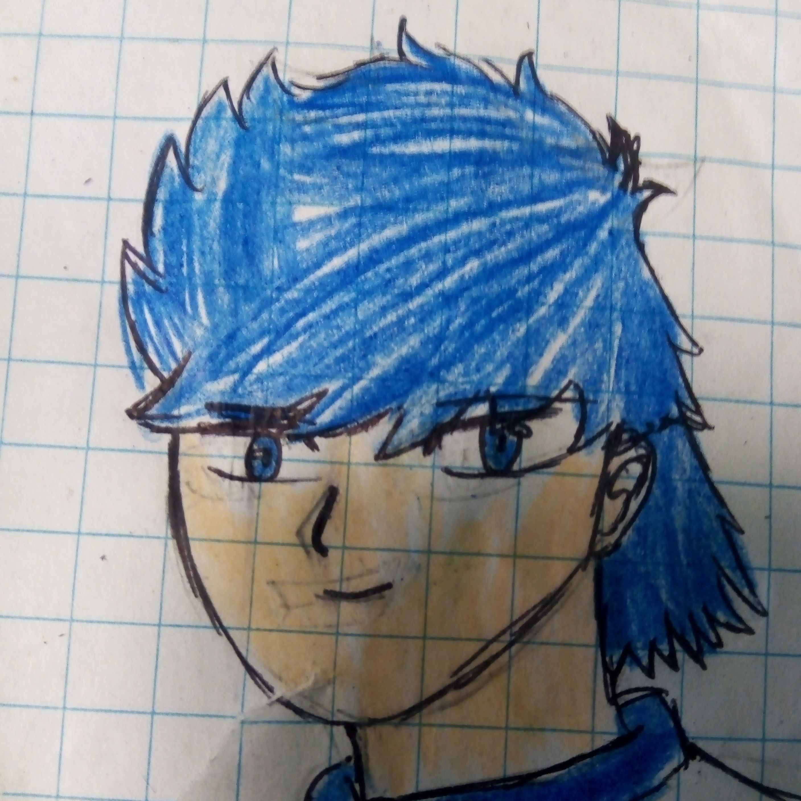
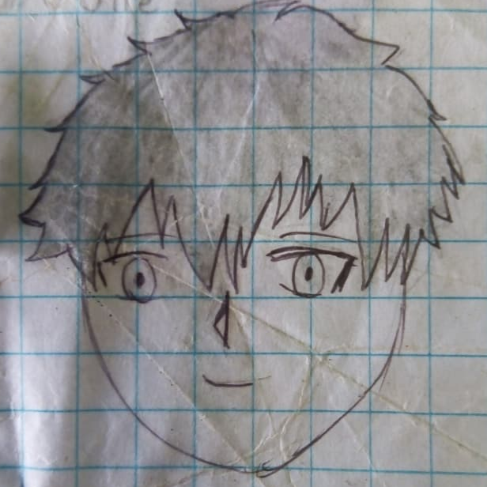
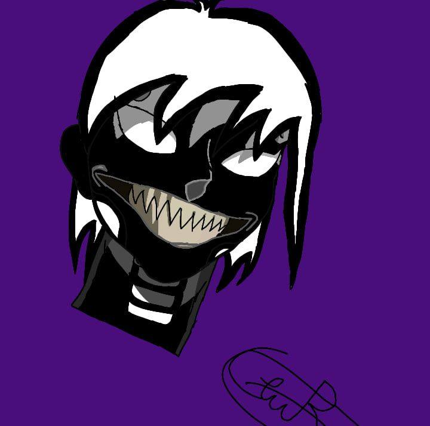
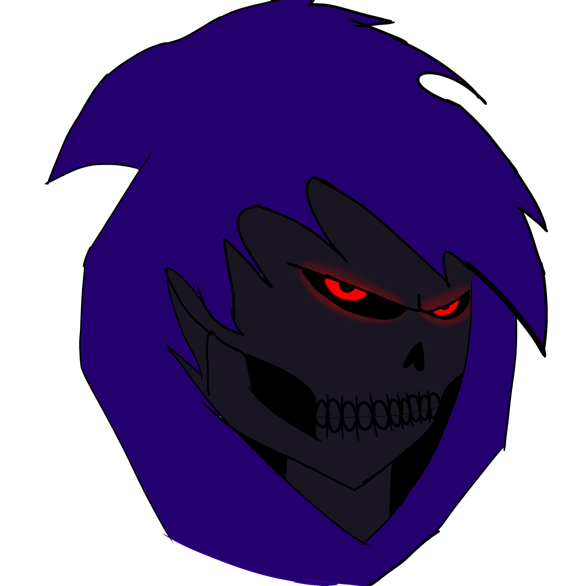
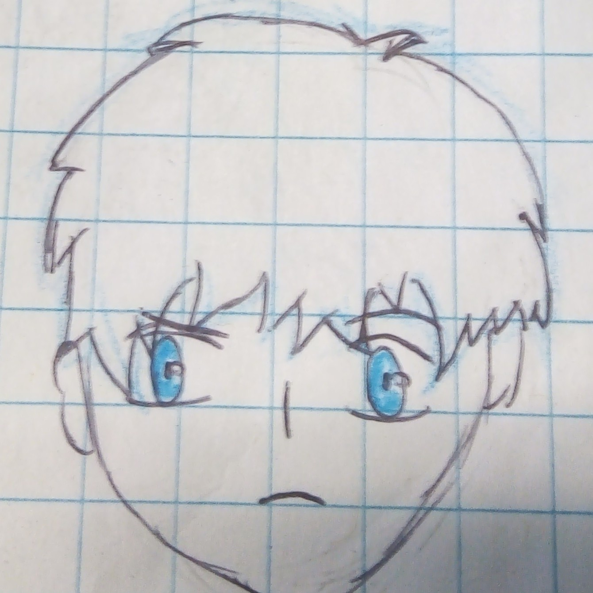
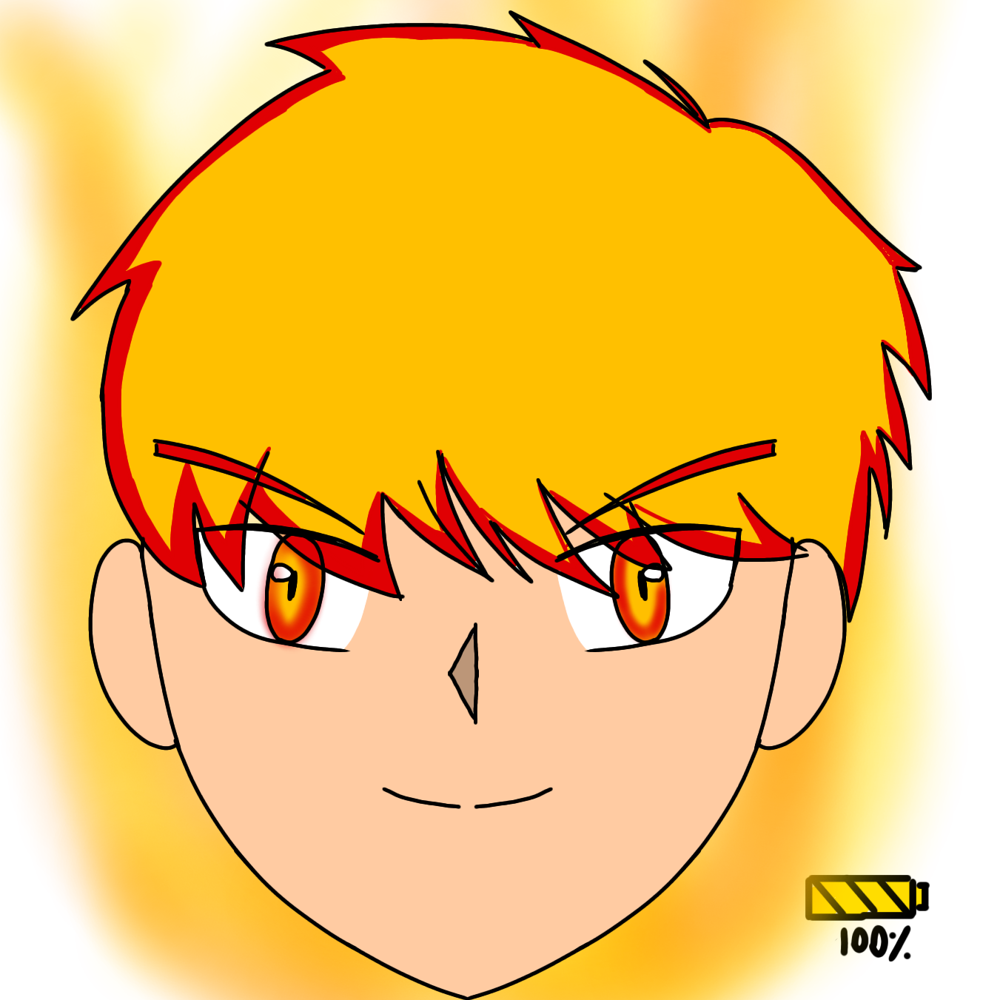
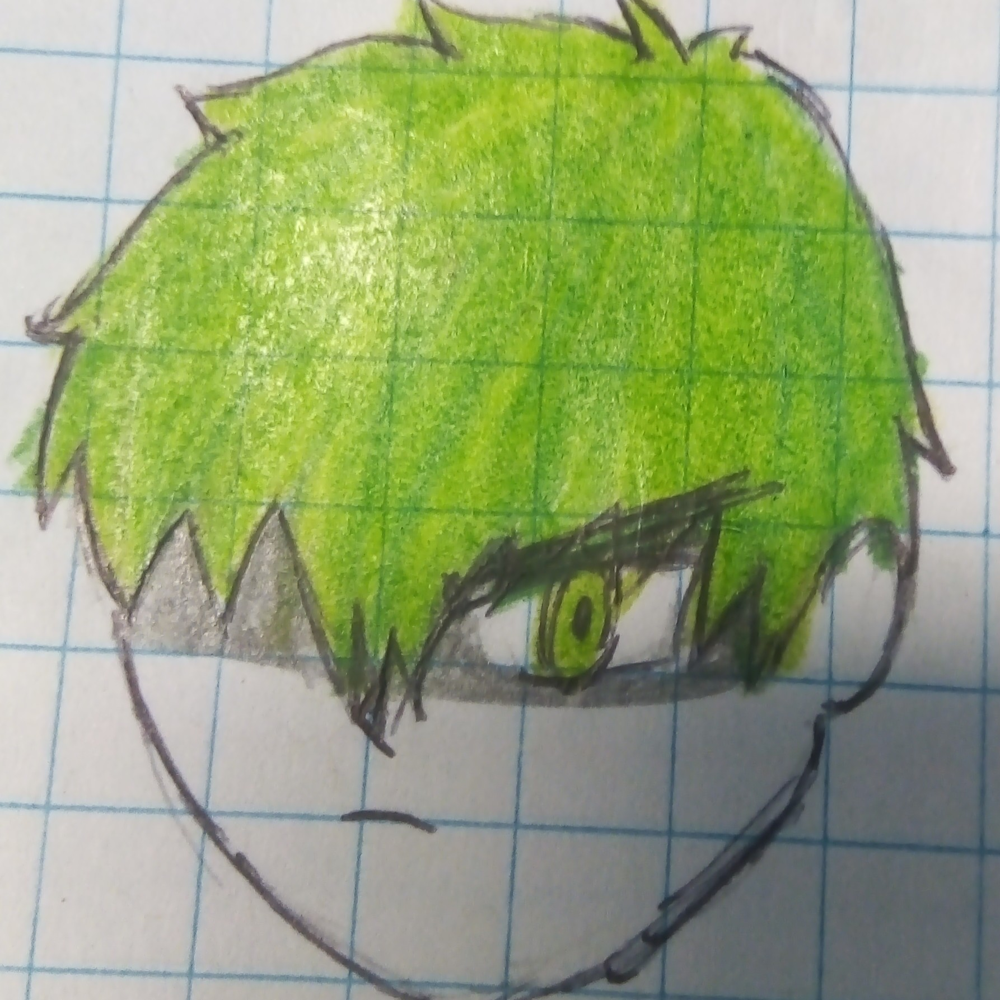
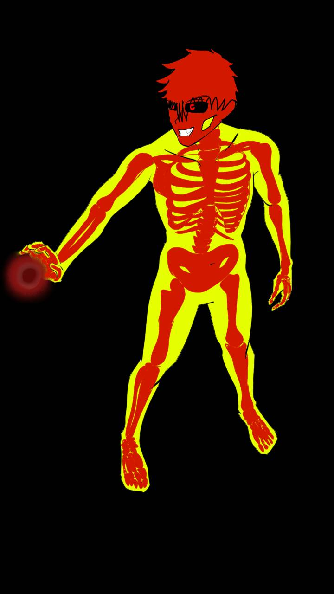
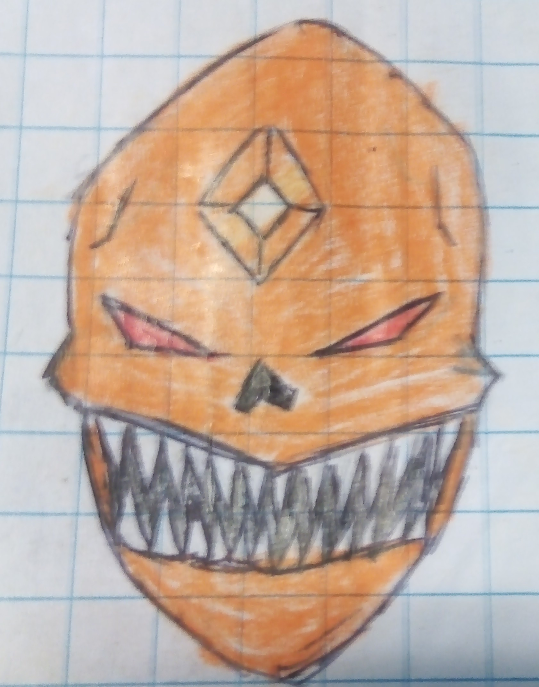

Wave
Wave es un humano con poderes de ondas sonicas, parecido al elemento aire, aunque no es el elemnto aire como tal, se relaciona mucho con este elemento. Su hijo se llama Air y su hija Brisa

Aqua
Aqua es un humano con poderes de controlar el Aqua, convertirse en charco a el mismo y sus amigos mientras los toque, y desplazarse, cuando llueve toma esta ventaja del agua en el piso para desplzarse simultaneamente

Stone
Stones es el humano elemental que controla solamente las rocas, entre mas grande, mas dificil le es desplazarlo, no se sabe su forma civil. Tiene un hijo llamado Rock.

Calavera (Latinoamérica) / Skull (inglés)
Calavera es un demonio en la mayoría de universos, es el hijo menor de Dark Bones, en el rumbo de la historia Calavera ha tenido muchas evoluciones o fases. Calavera tuvo un hijo de manera asexual, él se quitó un hueso y de ahí 'nació' su hijo Calavera II o Benjamín en su forma civil. Calavera en su forma civil se llama Jack Bones, y no se puso de acuerdo con skeleton en el apellido y es por eso que enforma civil tienen nombres distintos.
Poderes: Volar Cadenas Fantasmas o Tentaculos
Fases: Base: Calavera

Dark Bones
Es el padre de los 3 demonios elementales: Spectre, Skeleton y Skull. Es el hermano de Blood Reaper y tío de Ghost, esta casado con una mujer no muerta llamada Evangeline

Frost

Blaze

Alexander

Skeleton
Skeleton en el universo Zeta no se sabe nada de él, sólo que es alguien que vivía en la dimensión espejo y que es la contraparte de Calavera. Mientras que desde la versión Zero en adelante, es considerado el hermano de Calavera. El hijo en el medio, hijo de Dark Bones (su padre demonio) y Evangeline (su madre humana fallecida ahora no muerta). Skeleton en las crónicas de las versiones Zeta, 1 y 2, tiene un hijo llamado Damián que, al casarse con una humana, se convierte en semi-demonio. Skeleton decidió que su nombre humano fuera Ethan Marrow. Actualmente no se le ha dado una edad concreta a ningún personaje pero se estima que skeleton tiene de 35-40 años.

Spectre( forma monstruoso)
Spectre (Forma Base Calaverica)
